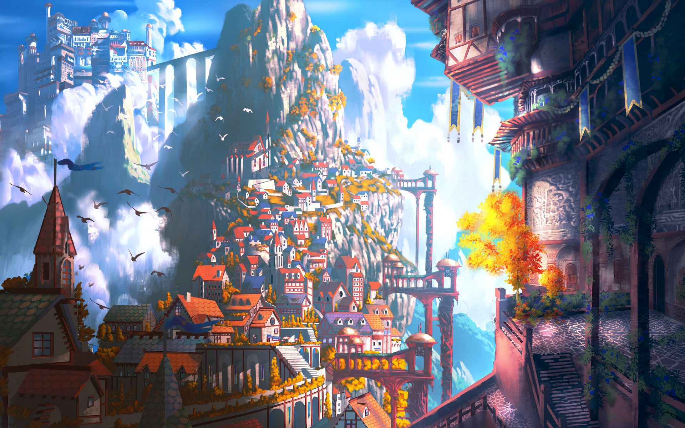
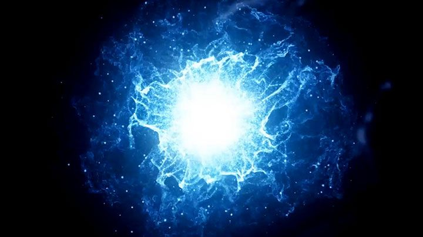

Ending

The Mage casts a spell that takes them both into town where
celebrations of our heros victory is taking place.
The mage talks to our hero.

MAGE-"This celebration is for you...I am sure you noticed that you were the only warrior out there.
We needed to see if you were the one the prophets spoke of. Many have died trying to accomplish what you just did.
This world can be yours if you choose to stay and rule. There will be more battles to be fought and even more riches to be taken."
HERO-"So i can go back home? What will happen to this place if I leave?"
MAGE-"I am going to be honest with you. Whatever path you choose, you are going to die.
You are dying in your world and there is no cure. The pills you could choose from took you to different places.
Since you picked the blue one it took you here to the part of your mind that wishes to fight the sickness that dwells inside of you.
'Going out fighting' is how you would phrase it. Ultimately you are eventually going to die here as well.
Once the body goes the mind will follow. Its up to you on how you meet your fate.
If you choose to stay here we will continue the celebration, if you want to go home there is a portal behind you.
What will you choose? "
